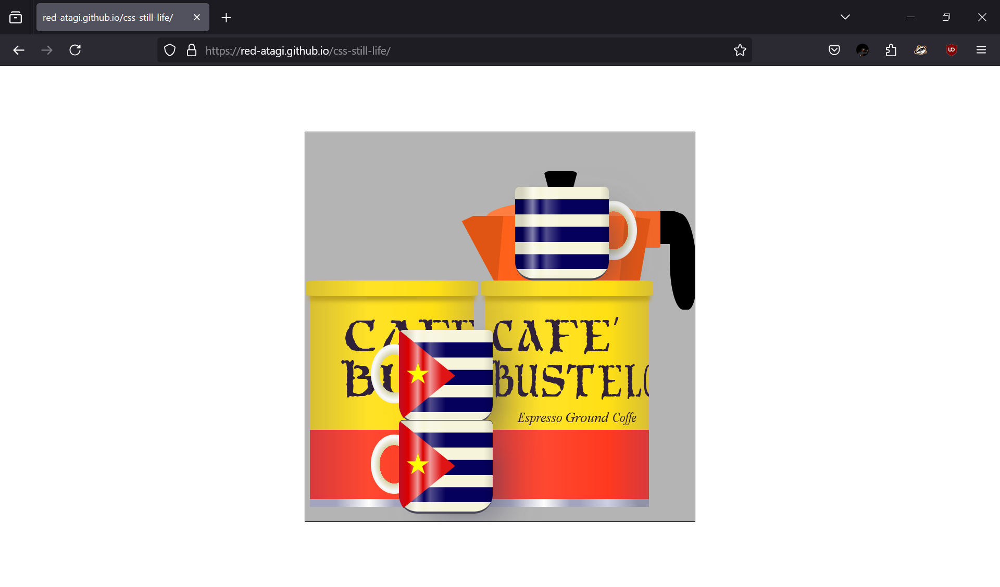

CSS Still Life
2025
Medium: CSS and HTML
In my Internet Art class we explored the CSS art scene with insiprations like Francine by Diana Smith. I used css art techniques like gradients, box shadows, and clip path I was able to recreate a still life.